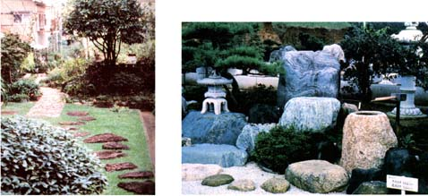
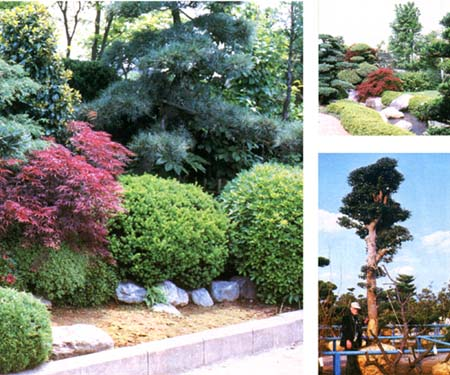

This idea could bring in a profit and add beauty to the world!
Few countries in the world-except perhaps Great Britain-take horticulture as seriously as does Japan . . . and, during our Plants and Gardens Tour of that nation last spring, we had the opportunity to visit some of the most spectacular examples of Japan's botanical, classical Zen, and privately owned landscape gardens. Almost equally impressive, however, were the thousands of exquisite little beauty spots that graced the entranceways and yards of many Japanese homes, apartment buildings, and businesses. In the delightful city of Kurume, a garden center on the southern island of Kyushu, the mayor had a lovely garden-which he himself tenderly nurtured right inside his office.
Kurume, in fact, provided us with evidence of what an incredibly big business gardening is and has been for centuries in the Land of the Rising Sun. In Japan, you see, nurseries seem to cluster in congenial communities of like interest . . . and in Kurume such businesses number more than 1,000! There, plant auctions-involving some 200 different species occur six or seven times a month . . . with total sales topping $10 million a year. (This is understandable, as well-to-do Japanese might be willing to pay from $15,000 to $20,000 for a large trained black pine.)
Such nursery centers have been flourishing for centuries, and-over the years-a common horticultural philosophy has developed. Usually, gardens are continually groomed and maintained in their original designs, so most show relatively little change over the decades or even for hundreds of years-except, of course, for the natural but controlled aging of plants. And the nursery worker, who is seen as a very special and talented artisan, plays a major role in the preservation process, making sure (for example) that quality plants are available as replacements.
It's also especially interesting to observe how well Japan's long-standing horticultural traditions have resisted the onslaught of technology and mass merchandising, cautiously incorporating new ideas without supplanting the old ways.
"SAMPLE GARDEN" SALES MAKE SENSE
There is, nevertheless, one innovation that's taken place in Japanese gardening that might be worthy of consideration in this country: In various cooperative nursery centers, small sample gardens are displayed, which show the buyer exactly what his or her final garden will look like . . . when it's installed a few days after the purchase. Because Japanese gardens are traditionally designed on a modular basis, this enterprise works quite well . . . and similar operations could, perhaps, be successful here, particularly as the construction of condominiums and town houses expands in this country. (Sales opportunities might also exist in urban centers like Philadelphia and San Francisco, where yards are often of a rather small and uniform size.)
In the 22,000-square-meter Kawaguchi Nursery Stock Market owned by the city of Kawaguchi, for example, a row of sample gardens has been constructed with the help of a landscape architect. Though these "instant gardens" are no more than 200 square feet in size, they often employ a remarkable range of plant materials. A large sign in front of the sample gardens states the prices of the permanent outdoor displays, which can range from about $1,200 to $5,000 for the completely installed garden, including fences, stones, and other accessories. Nearby, a gardener can also see sample entrance walks, ornamental bamboo fences, various kinds of hedges, stones, lanterns, and so on ... displayed in the same manner that rooms of furniture are arranged in American stores.
And it seems likely that an enterprising gardener, nursery owner, or landscape architect-by borrowing a few ideas and creating some new ones-could come up with similar examples of small rock, herb, Victorian, water, or other types of traditional gardens that would appeal to Westerners who want to put a bit of natural beauty into a limited space.
If you already own a nursery or are thinking of opening one, you'll want to consider that enclosed gardens of this nature would consist principally of mature plants. The sale of such specimens, combined with contracts for the maintenance of the gardens, would almost guarantee a continuing clientele. What's more, by creating opportunities to own and care for small but well-groomed gardens, you'd be likely to stimulate greater interest in horticulture in your community and, at the same time, offer the urban dweller an exotic contrast to the standard charcoal broiler and deck chairs that so often decorate small patios and backyards!
|
 |
 |
|